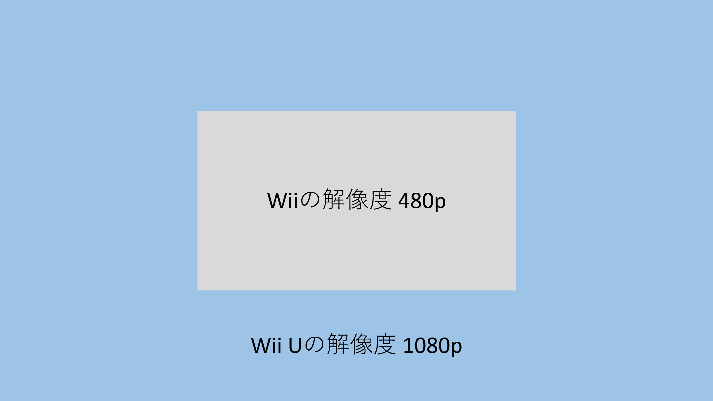
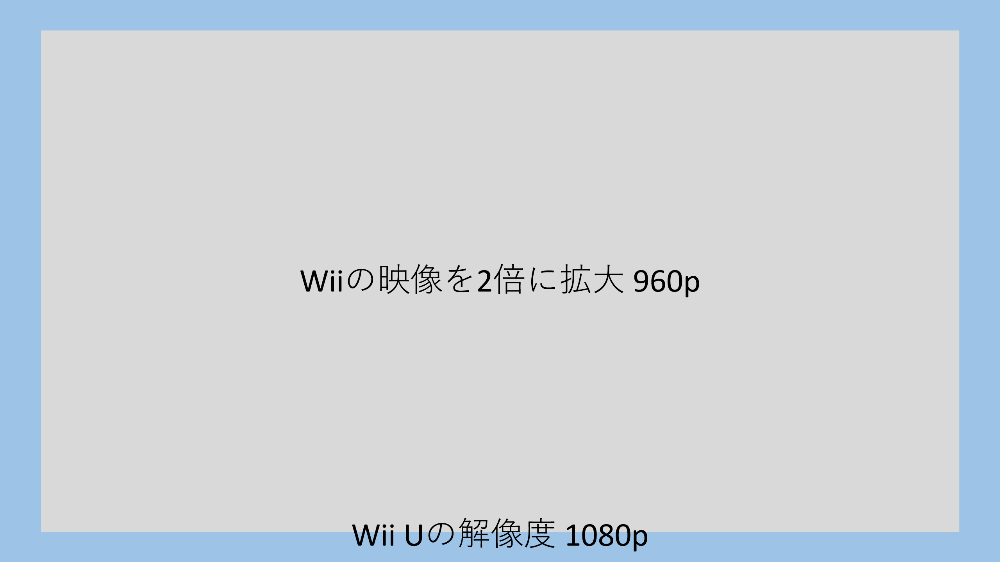
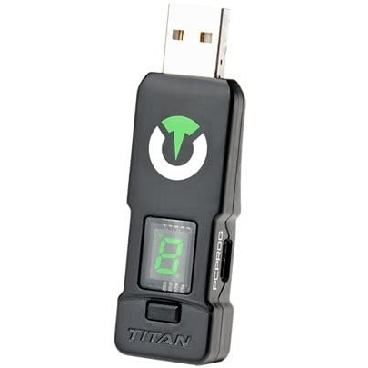
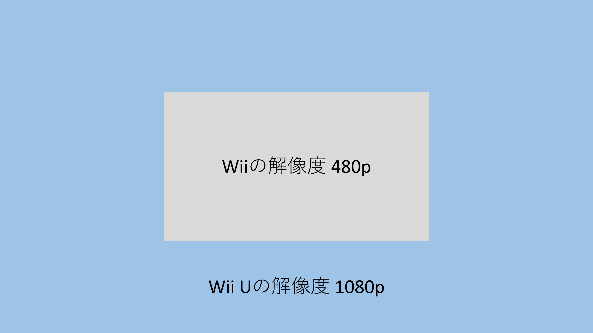
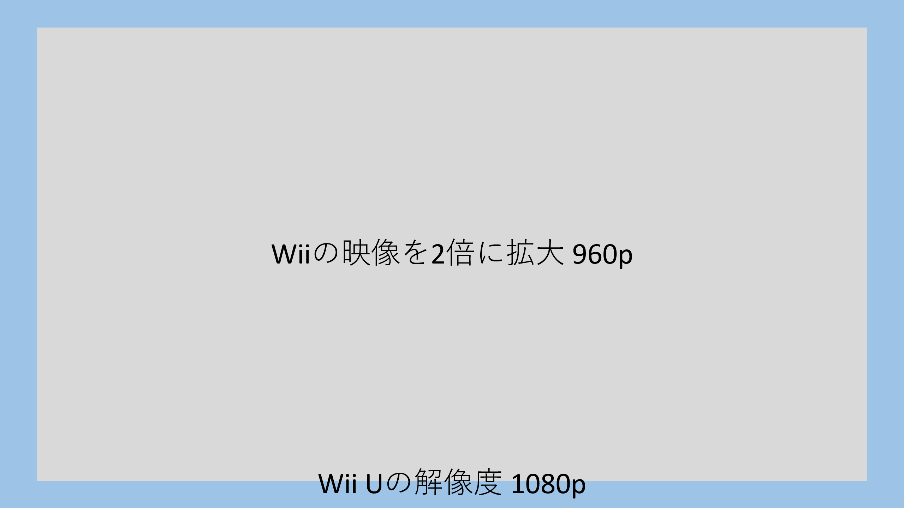
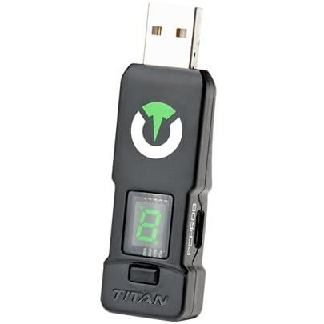

Xenoblade
Nintendo switch
コントローラー

New3DS版は2画面を活かしたUIの変更や、作中の3Dモデルを閲覧できる機能などが追加されただけで、大部分はWii版と変わりません。もちろん、3D映像には対応しています。
DEではグラフィックや3Dモデルなど多くの部分がリメイクされただけでなく、後日譚となるストーリー「つながる未来」が追加されています。他にも多くの部分で改良されており、まさにゼノブレイドの決定版と言えます。
大抵の人はゲーム機の快適性やゲームの起動の速さに秀でた方を多く遊ぶ傾向があります。Wii Uで遊ぶのと、SwitchやXbox Series X|Sで遊ぶのを比べると、後者の方がハードルが低いです。Switchでゼノブレイドが出ればもっと進むはず…と思っていました。
そんな折に発売されたゼノブレイドDE。待望のNintendo Switchでの発売です。しかし引き下がるには惜しいほどWii版とNew3DS版を進めていたことと、ある問題点からDEには触れずにいました。
ヌンチャクと標準ボタン配置。ゼノブレイドにおいてどちらが操作しやすいでしょうか。私個人の感想ではありますが、戦闘で操作しやすいのがヌンチャク、それ以外で操作しやすいのが標準ボタン配置だと思います。
標準ボタン配置のメリットは何と言ってもカメラ操作でしょう。Wiiリモコンには右スティックが無いので、cボタンを押しながら十字ボタンでカメラを回します。あまり快適とは言えませんね。Wiiリモコンの①②ボタンのように、押しにくい位置にボタンが無いのも標準ボタン配置の魅力です。そんな魅力を捨ててでもWiiリモコン＆ヌンチャクを使いたい理由は、ゼノブレイドの戦闘システムにあります。
ゼノブレイドはポケモンやリングフィットのような戦闘画面がありません。フィールド上でシームレスに戦闘を行います。戦闘中も左スティックで移動でき、敵との位置関係によって威力が変わるアーツ（技）もあります。つまり位置取りも無視できない要素です。
フィールド上でリアルタイムで戦闘するという点はアクションっぽいですが、大筋はコマンド選択式RPG。アーツを十字ボタンで選んで発動します。そう、十字ボタンを多用するのです。標準ボタン配置だと移動とアーツ選択を同時に行えません。Wiiリモコン＆ヌンチャクなら右手側に十字ボタンがあるので、移動とアーツ選択を同時に行えます。この操作感がとてもとても捨てがたかったのが、DEに移行できなかった理由の一つです。
実はこの現象は最初からありましたが気づきませんでした。今回気づいた理由は、前にゼノブレイドを遊んだ時とは使用しているTVが違うことです。リビングに前あったTVはベゼルが5cm以上あり、今のTVはベゼルが1cmにも満たない細さです。ベゼルがほとんどない状況に慣れすぎてしまったので、少しでもベゼルが太いと気になってしまいます。
表示域が狭くなる原因はWii Uの仕様でした。画面に表示される映像は、様々な色の点の集合で構築されます。その点の数が解像度。Wiiの解像度は480pで、Wii Uの最大解像度は1080pです。

Wiiの映像を画面いっぱいに表示すると、画素数が違うため上手く補完する必要があります。逆に画素数を揃えるドットバイドットで表示すると表示範囲が物凄く小さくなってしまいます。
Wii UはWiiの480p映像をドットバイドット表示の表示域から2倍に拡大します。2×2個の画素を1つの画素として使うのです。

これにより事実上の解像度は480pのままですが、表示域は960p相当になり広くなります。1080pと比べると多少狭いため外側を黒枠で囲います。
ベゼルが細いのにすっかり慣れてしまったので、これには我慢できません。それなりに進んでいたWii版をやめ、DEを一から始めた方が良いと判断しました。
まず用意したのがこちら

コントローラー変換器「Titan One」です。本製品とBluetoothドングルを組み合わせる事で、WiiリモコンをSwitchに接続する事ができます。さらにTitan Oneはコードを書き込む事で、ボタンの配置を変えるなど色んな動作を実装できます。Joy-ConとWiiリモコンはボタンの配置が違うので、高い自由度で機能を変更できる変換器が必要です。
そして書き込んだコードがこちら
このコードを書くのにものすごーく時間がかかりました。特に苦労した点は、出力値が入力値を上書きするというTitan Oneの仕様上の欠陥です。
例えば
Aボタンを入力するとBボタンを出力する
Bボタンを入力するとXボタンを出力する
みたいなコードを書くとします。するとAボタンを入力した時にBボタンではなくXボタンを出力してしまいます。意味わかんないですね。この欠陥を対策するためにコードの行数が倍以上になりました。
他にも、Wii版と異なりメニュー画面の操作にZLZRが必要だったり、何かと細かな違いがあったので対処しています。手間はかかりましたが、これでWii版にかなり近い操作感でゼノブレイドDEを遊べます。良かった、これで解決ですね！ でももうゼノブレイド3の発売が目の前に迫っているので時間が無限に足りないです。
さて、今回は操作、映像、音響のうち操作と映像に触れました。次回は音響の観点でゼノブレイド3を評価してみたいと思います！
Wiiリモコン狂信者がゼノブレイドDEをはじめた話
みなさんこんにちは！元素さんです！
もうすぐゼノブレイド3が発売されます（というかこの記事を書くのが遅すぎてもう前日ですね）。楽しみです！ 私はコレクターズエディション（特典のみ）を2つ予約し、ソフトはカタログチケットで買いました✌
そんなこんなで今回はゼノブレイド関連のお話です。
ビデオゲームを構成する主な要素を3つに絞るなら、操作、映像、音響でしょう。今回は操作と映像の観点でゼノブレイドについて語っていきたいと思います。
目次
バージョンごとの違い
ゼノブレイドには3つのバージョンがあります。Wii版がオリジナルで、その後New3DSに移植され、Nintendo Switchでリメイク版「Definitive Edition」（以下DEと略します）が発売されています。Wii U向けに配信されたものはWii版をそのままダウンロード版にしただけなので、この記事ではWii版と同一の物として扱います。New3DS版は2画面を活かしたUIの変更や、作中の3Dモデルを閲覧できる機能などが追加されただけで、大部分はWii版と変わりません。もちろん、3D映像には対応しています。
DEではグラフィックや3Dモデルなど多くの部分がリメイクされただけでなく、後日譚となるストーリー「つながる未来」が追加されています。他にも多くの部分で改良されており、まさにゼノブレイドの決定版と言えます。
これまでの経緯
私がゼノブレイドを始めたのは2017年の7月だったと記憶しています。ゼノブレイド2の発売が近づいて盛り上がってきたのを機に。しかし2017年は何かとゲームソフトが豊作で…いやその後も豊作続きだったために進まなかったんですよね。特に何のゲームソフトとは言いませんが、サルベージミッションに費やした時間でゼノブレイドを3周できた気がします。大抵の人はゲーム機の快適性やゲームの起動の速さに秀でた方を多く遊ぶ傾向があります。Wii Uで遊ぶのと、SwitchやXbox Series X|Sで遊ぶのを比べると、後者の方がハードルが低いです。Switchでゼノブレイドが出ればもっと進むはず…と思っていました。
そんな折に発売されたゼノブレイドDE。待望のNintendo Switchでの発売です。しかし引き下がるには惜しいほどWii版とNew3DS版を進めていたことと、ある問題点からDEには触れずにいました。
Wii版にこだわっていた理由
Wii版とDEの大きな違いの一つに、操作方法があります。Wii版はWiiリモコン＆ヌンチャクとクラシックコントローラーに対応していました。New3DS版やDEの操作方法は、Wii版のクラシックコントローラーでの操作を踏襲しています（3DSの仕様やDEでの追加要素など軽微な違いはありますが、基本的な部分は同じでしょう）。これらの操作方法をざっくり二分すると、「ヌンチャク」と「標準ボタン配置」と言ったところでしょうか。ヌンチャクと標準ボタン配置。ゼノブレイドにおいてどちらが操作しやすいでしょうか。私個人の感想ではありますが、戦闘で操作しやすいのがヌンチャク、それ以外で操作しやすいのが標準ボタン配置だと思います。
標準ボタン配置のメリットは何と言ってもカメラ操作でしょう。Wiiリモコンには右スティックが無いので、cボタンを押しながら十字ボタンでカメラを回します。あまり快適とは言えませんね。Wiiリモコンの①②ボタンのように、押しにくい位置にボタンが無いのも標準ボタン配置の魅力です。そんな魅力を捨ててでもWiiリモコン＆ヌンチャクを使いたい理由は、ゼノブレイドの戦闘システムにあります。
ゼノブレイドはポケモンやリングフィットのような戦闘画面がありません。フィールド上でシームレスに戦闘を行います。戦闘中も左スティックで移動でき、敵との位置関係によって威力が変わるアーツ（技）もあります。つまり位置取りも無視できない要素です。
フィールド上でリアルタイムで戦闘するという点はアクションっぽいですが、大筋はコマンド選択式RPG。アーツを十字ボタンで選んで発動します。そう、十字ボタンを多用するのです。標準ボタン配置だと移動とアーツ選択を同時に行えません。Wiiリモコン＆ヌンチャクなら右手側に十字ボタンがあるので、移動とアーツ選択を同時に行えます。この操作感がとてもとても捨てがたかったのが、DEに移行できなかった理由の一つです。
やめた理由
ゼノブレイド3が発表されたのを機に、久しぶりにやってみようとWii Uを配線しました。しかしゼノブレイドを起動すると、今までとは異なり猛烈な違和感が。TVのベゼル（額縁）が明らかに太く見えます。つまりゲーム映像の表示域がTVの表示域より狭くなっているのです。実はこの現象は最初からありましたが気づきませんでした。今回気づいた理由は、前にゼノブレイドを遊んだ時とは使用しているTVが違うことです。リビングに前あったTVはベゼルが5cm以上あり、今のTVはベゼルが1cmにも満たない細さです。ベゼルがほとんどない状況に慣れすぎてしまったので、少しでもベゼルが太いと気になってしまいます。
表示域が狭くなる原因はWii Uの仕様でした。画面に表示される映像は、様々な色の点の集合で構築されます。その点の数が解像度。Wiiの解像度は480pで、Wii Uの最大解像度は1080pです。

Wiiの映像を画面いっぱいに表示すると、画素数が違うため上手く補完する必要があります。逆に画素数を揃えるドットバイドットで表示すると表示範囲が物凄く小さくなってしまいます。
Wii UはWiiの480p映像をドットバイドット表示の表示域から2倍に拡大します。2×2個の画素を1つの画素として使うのです。

これにより事実上の解像度は480pのままですが、表示域は960p相当になり広くなります。1080pと比べると多少狭いため外側を黒枠で囲います。
ベゼルが細いのにすっかり慣れてしまったので、これには我慢できません。それなりに進んでいたWii版をやめ、DEを一から始めた方が良いと判断しました。
絶対にWiiリモコンを使うという執念
ゼノブレイドDEを遊びたいけどWiiリモコン＆ヌンチャクで操作したい。わがままですね。SwitchにWiiリモコンを繋ぐ事はできません。そんな道理、私の無理でこじ開ける！ なーんて大口叩いて、何とかしてWiiリモコンで操作する事に挑戦してみました。まず用意したのがこちら

コントローラー変換器「Titan One」です。本製品とBluetoothドングルを組み合わせる事で、WiiリモコンをSwitchに接続する事ができます。さらにTitan Oneはコードを書き込む事で、ボタンの配置を変えるなど色んな動作を実装できます。Joy-ConとWiiリモコンはボタンの配置が違うので、高い自由度で機能を変更できる変換器が必要です。
そして書き込んだコードがこちら
// 各ボタンの出力を管理するフラグ
int a_flag = 0;
int b_flag = 0;
int x_flag = 0;
int y_flag = 0;
int l_flag = 0;
int r_flag = 0;
int zl_flag = 0;
int zr_flag = 0;
int sl_flag = 0;
int sr_flag = 0;
int p_flag = 0;
int m_flag = 0;
int cap_flag = 0;
// 長押しした時間に関わるフラグ
int z_time = 1;
int c_time = 1;
// 十字ボタンの入力値を格納する変数
int dup;
int ddn;
int dl;
int dr;
int sum; // 計算用の変数
int wnc; // cボタンの入力値を格納する変数
int wnz; // zボタンの入力値を格納する変数
main {
//十字ボタンの入力値を取得
dup = get_val(WII_UP);
ddn = get_val(WII_DOWN);
dl = get_val(WII_LEFT);
dr = get_val(WII_RIGHT);
//条件分岐のため合算する
sum = dup + ddn + dl + dr;
wnc = get_val(WII_C); // cボタンの入力値を取得
wnz = get_val(WII_Z); // zボタンの入力値を取得
// Aボタンの入力値を取得
if(get_val(WII_A)){
a_flag = 1;
}
// Bボタンの入力値を取得
if(get_val(WII_B)){
b_flag = 1;
}
// +ボタンの入力値を取得
if(get_val(WII_PLUS)){
p_flag = 1;
}
// -ボタンの入力値を取得
if(get_val(WII_MINUS)){
m_flag = 0;
x_flag = 1;
}
// cボタンを押したとき、Lボタンが出力されるのを防ぐ
if(wnc){
l_flag = 0;
}
// cボタンを押したとき、Lボタンが出力されるのを防ぐ
if(wnz){
zl_flag = 0;
}
if(wnc && wnz){
// cボタンとzボタンを同時押しした時、カメラの引き具合などをリセットする
zl_flag = 1;
sr_flag = 1;
z_time = 0;
c_time = 0;
}else{
sr_flag = 0; // なんでこの行書いたか思い出せない
if(wnz){
// zボタンを押しながら
if(dup){
// 十字の上を押すとマップ切り替え
set_val(SWITCH_UP,0);
sl_flag = 1;
z_time = 0;
}
if(ddn){
// 十字の下を押すと集合
zr_flag = 1;
z_time = 0;
}
if(dl){
// 十字の左を押すとターゲット切り替え
set_val(SWITCH_LEFT,0);
l_flag = 1;
z_time = 0;
}
if(dr){
// 十字の右を押すとターゲット切り替え
set_val(SWITCH_RIGHT,0);
r_flag = 1;
}
if(get_val(WII_A)){
// Aボタンを押すと集中攻撃
a_flag = 0;
zr_flag = 1;
set_val(SWITCH_UP,100);
z_time = 0;
}
if(get_val(WII_B)){
// Bボタンを押すと各自に任せる
b_flag = 0;
zr_flag = 1;
set_val(SWITCH_RIGHT,100);
z_time = 0;
}
if(get_val(WII_PLUS)){
// +ボタンを押すとZRボタンを出力
// Wii版にない操作
// メニュー画面でZRボタンが必要なので
p_flag = 0;
zr_flag = 1;
z_time = 0;
}
if(get_val(WII_MINUS)){
// -ボタンを押すとZLボタンを出力
// Wii版にない操作
// メニュー画面でZLボタンが必要なので
x_flag = 0;
zl_flag = 1;
z_time = 0;
}
}
if(wnc){
// cボタンを押しながら
if(get_val(WII_A)){
// Aボタンを押すとカメラが寄る
a_flag = 0;
zl_flag = 1;
set_val(SWITCH_RY,-100);
c_time = 0;
}
if(get_val(WII_B)){
// Bボタンを押すとカメラが引く
b_flag = 0;
zl_flag = 1;
set_val(SWITCH_RY,100);
c_time = 0;
}
// 十字ボタンでカメラを回す
if(sum > 102){
c_time = 0;
if(dup && dl){
set_val(SWITCH_RX,-70);
set_val(SWITCH_RY,-70);
}
if(dup && dr){
set_val(SWITCH_RX,70);
set_val(SWITCH_RY,-70);
}
if(ddn && dl){
set_val(SWITCH_RX,-70);
set_val(SWITCH_RX,70);
}
if(ddn && dr){
set_val(SWITCH_RX,70);
set_val(SWITCH_RY,70);
}
}else{
if(dup){
set_val(SWITCH_RY,-100);
c_time = 0;
}
if(ddn){
set_val(SWITCH_RY,100);
c_time = 0;
}
if(dl){
set_val(SWITCH_RX,-100);
c_time = 0;
}
if(dr){
set_val(SWITCH_RX,100);
c_time = 0;
}
}
// 誤入力対策のお祓い
set_val(SWITCH_UP,0);
set_val(SWITCH_DOWN,0);
set_val(SWITCH_LEFT,0);
set_val(SWITCH_RIGHT,0);
}
}
if(get_val(WII_ONE)){
// ①ボタンでスキップトラベル
sr_flag = 0;
y_flag = 1;
}
if(get_val(WII_TWO)){
// Wii版とDEの違いで②ボタンが余ったのでキャプチャボタンを割り当て
sl_flag = 0;
cap_flag = 1;
}else{
cap_flag = 0;
}
// zボタン長押しの閾値
if(get_ptime(WII_Z)>1000){
z_time = 0;
}
if(event_release(WII_Z)){
if(z_time){
r_flag = 5; // Zボタンを短く押すとターゲットロック
}else{
z_time = 1; // 一定時間以上長押しした時はターゲットロックしない
}
}
// cボタン長押しの閾値
if(get_ptime(WII_C)>1000){
c_time = 0;
}
if(event_release(WII_C)){
if(c_time){
sr_flag = 5; // cボタンを短く押すとカメラリセット
}else{
c_time = 1; // 一定時間以上長押しした時はカメラリセットしない
}
}
// 以下 最終的にSwitchに送る信号の管理
if(a_flag){
set_val(SWITCH_A,100);
a_flag = 0;
}else{
set_val(SWITCH_A,0);
}
if(b_flag){
set_val(SWITCH_B,100);
b_flag = 0;
}else{
set_val(SWITCH_B,0);
}
if(x_flag){
set_val(SWITCH_X,100);
x_flag = 0;
}else{
set_val(SWITCH_X,0);
}
if(y_flag){
set_val(SWITCH_Y,100);
y_flag = 0;
}else{
set_val(SWITCH_Y,0);
}
if(l_flag){
set_val(SWITCH_L,100);
l_flag = 0;
}else{
set_val(SWITCH_L,0);
}
if(r_flag){
set_val(SWITCH_R,100);
r_flag--;
}else{
set_val(SWITCH_R,0);
}
if(zl_flag){
set_val(SWITCH_ZL,100);
zl_flag = 0;
}else{
set_val(SWITCH_ZL,0);
}
if(zr_flag){
set_val(SWITCH_ZR,100);
zr_flag = 0;
}else{
set_val(SWITCH_ZR,0);
}
if(sl_flag){
set_val(SWITCH_SL,100);
sl_flag = 0;
}else{
set_val(SWITCH_SL,0);
}
if(sr_flag){
set_val(SWITCH_SR,100);
sr_flag--;
}else{
set_val(SWITCH_SR,0);
}
if(p_flag){
set_val(SWITCH_PLUS,100);
p_flag = 0;
}else{
set_val(SWITCH_PLUS,0);
}
if(m_flag){
set_val(SWITCH_MINUS,100);
m_flag = 0;
}else{
set_val(SWITCH_MINUS,0);
}
if(cap_flag){
set_val(SWITCH_CAPTURE,100);
}else{
set_val(SWITCH_CAPTURE,0);
}
// 以下 左スティックの感度調整
sensitivity(WII_NX , NOT_USE, 150);
sensitivity(WII_NY , NOT_USE, 150);
stickize(SWITCH_LX, SWITCH_LY, 140);
deadzone(WII_NX, WII_NY, DZ_CIRCLE, 2);
}
このコードを書くのにものすごーく時間がかかりました。特に苦労した点は、出力値が入力値を上書きするというTitan Oneの仕様上の欠陥です。
例えば
Aボタンを入力するとBボタンを出力する
Bボタンを入力するとXボタンを出力する
みたいなコードを書くとします。するとAボタンを入力した時にBボタンではなくXボタンを出力してしまいます。意味わかんないですね。この欠陥を対策するためにコードの行数が倍以上になりました。
他にも、Wii版と異なりメニュー画面の操作にZLZRが必要だったり、何かと細かな違いがあったので対処しています。手間はかかりましたが、これでWii版にかなり近い操作感でゼノブレイドDEを遊べます。良かった、これで解決ですね！ でももうゼノブレイド3の発売が目の前に迫っているので時間が無限に足りないです。
あとがき
そんなことで、今回はWiiリモコンに魂を縛られた人の執念のお話でした。二度とこんな劣悪な開発環境ではコーディングしたくないです。でも操作感は大事です。さて、今回は操作、映像、音響のうち操作と映像に触れました。次回は音響の観点でゼノブレイド3を評価してみたいと思います！